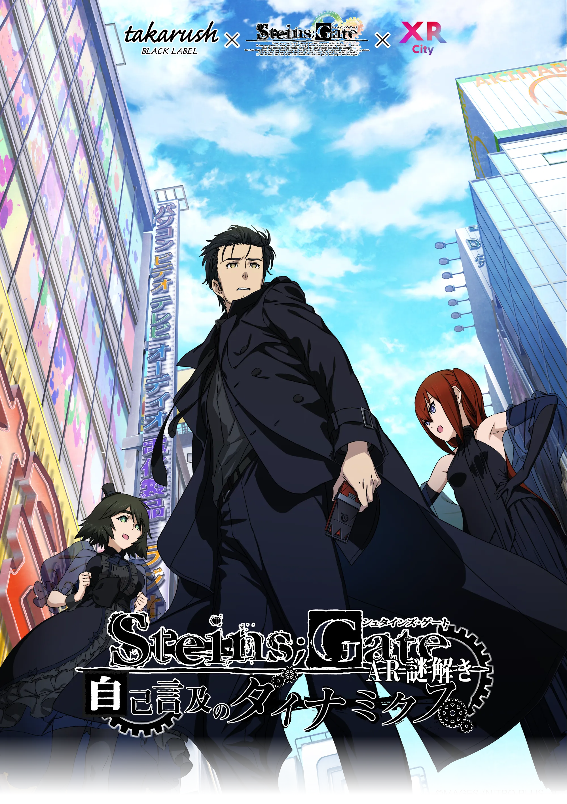

点击跳过
STEINS;GATE
.
自我指涉的
动力学
秋叶原，一次偶然的相遇。
继续阅读
↗
开始阅读
→
选择章节
01 — 11
故事模式
⇄
简体中文
/
日本語
⇄
原作日语配音
游玩说明
原版资料
AR 杯垫
下载离线版
Windows · 215 MB
GitHub

10:00
WORLD LINE
世界线发生变动
Fin.
点击文字或按空格继续
故事模式
回看记录
选择章节
存档与读取
自动
声音 开
阅读设置
原版资料
返回主菜单
重听配音
点击播放